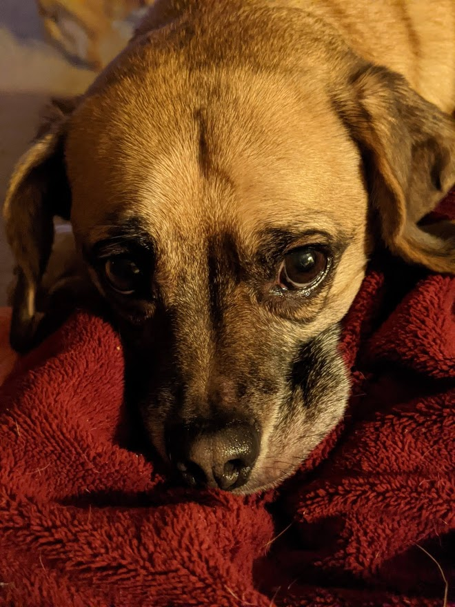
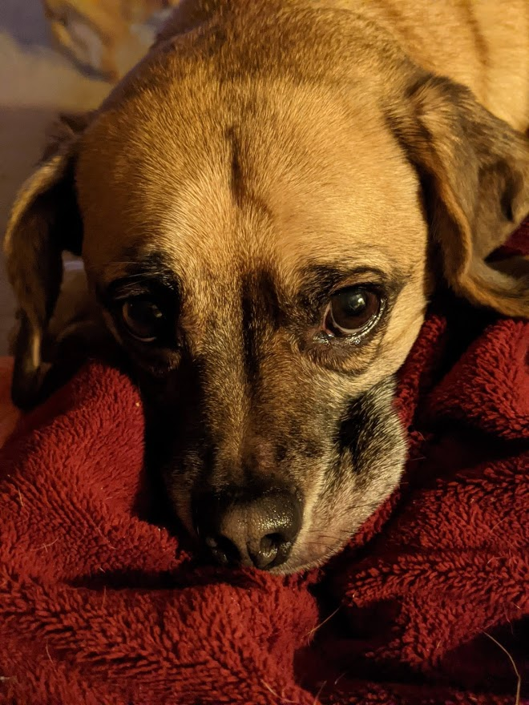

Bojangles!
We adopted Bojangles from a rescue in 2013 or 2014. He started out as a handful but has mellowed out. He can still be very moody and stubborn though! He love's twirling up in a blanket or finding a spot to squeeze into when he can. His name was supposed to be Finn but Bojnagles wound up sticking.
 
